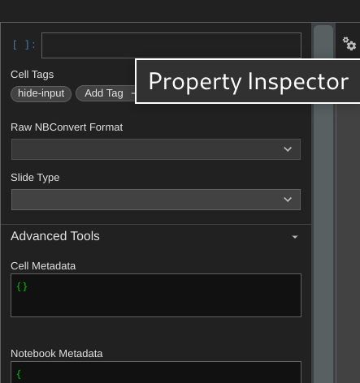
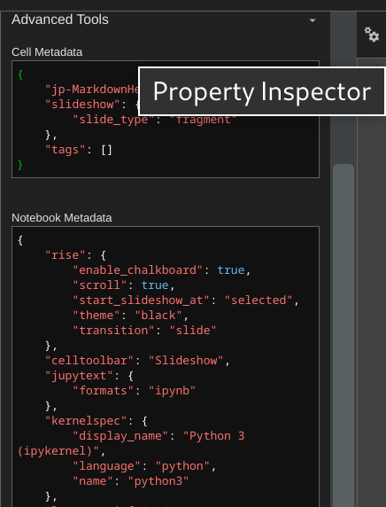

Metadata Setting
Contents
7. Metadata Setting#
Edit tags under the “Property Inspector” menu with the gears icon at the top-right corner.
Tags UI in JupyterLab looks like:

7.1. Two levels of metadata#
For cell level
Edit Cell Metadata, and click the checkmark right below the metadata tag to save the changes.

For notebook level
Edit Notebook Metadata, and click the checkmark below the metadata tag to save the changes.

8. Custom RISE#
Source: RISE documentation
Here is the rise configuration for this demo file.
"rise": {
"enable_chalkboard": true,
"header": "<h2>Hello</h2>",
"footer": "<h3>World!</h3>",
"scroll": true,
"start_slideshow_at": "selected",
"theme": "black",
"transition": "slide"
}
Plus, all parameters we can use.
"rise": {
"autolaunch": false,
"enable_chalkboard": false,
"start_slideshow_at": "beginning",
"auto_select": "code",
"show_buttons_on_startup": false,
"header": "",
"footer": "",
"backimage": false,
"overlay": "",
"theme": "simple",
"transition": "cube",
"slideNumber": "h/v",
"width": "100%",
"height": "100%",
"controls": true,
"progress": true,
"history": true,
"scroll": true,
"center": true,
"auto_select_timeout": 450,
"restore_timeout": 500,
"async_timeout": 250
}
8.1. Choose a theme#
{
...
"rise": {"theme": "black"}
}
The default theme is simple, and there are 11 themes you can choose from, such as black, white, league, sky, beige, simple, serif, blood, night, moon, and solarized.
Name |
Effect |
|
|---|---|---|
1 |
simple |
White background, black text, blue links (default) |
2 |
black |
Black background, white text, blue links |
3 |
white |
White background, black text, blue links |
4 |
league |
Gray background, white text, blue links |
5 |
beige |
Beige background, dark text, brown links |
6 |
sky |
Blue background, thin dark text, blue links |
7 |
night |
Black background, thick white text, orange links |
8 |
serif |
Cappuccino background, gray text, brown links |
9 |
solarized |
Cream-colored background, dark green text, blue links |
10 |
blood |
Dark background, thick white text, red links |
11 |
moon |
Dark blue background, thick grey text, blue links |
This is a rending of a markdown table.
8.2. Choose a transition#
The default transition is cube, and there are 8 effects you can select, such as "none", "fade", "slide", "convex", "concave", "zoom", "cube", "linear".
{
...
"rise": {"transition": "slide"}
}
8.3. Choose where the slideshow begins#
By default, RISE will start at the "selected" slide.
To have it start at the first slide instead, use this configuration:
{
...
"rise": {"start_slideshow_at": "beginning"}
}
8.4. Enable a right scroll bar#
To enable a right scroll bar when your content exceeds the slide vertical height.
{
...
"rise": {"scroll": true}
}
8.5. Enable chalkboard capabilities#
{
...
"rise": {"enable_chalkboard": true}
}
8.6. Decorating all slides#
{
...
"rise": {
"header": "<h2>Hello</h2>",
"footer": "<h3>World!</h3>"
}
}
If the slide contents are so large that they cover the header and footer, you should set the “z-index” of the header and footer to a bigger value than the present slide section.
div#rise-header, div#rise-footer{
z-index: 20;
}
In our case, set “z-index” of the header and footer to 20, since “z-index” of “stack present” is 11 and chalkboard buttons’ value is 30.
9. Keyboard setting#
Press Space to proceed.
If you press Shift-Space - you will go backwards.
9.1. Add slide tag to each cell#
shift-i: toggle slideshift-b: toggle subslideshift-g: toggle fragment
9.2. Zoom in /out#
Alt + and Alt -
or similar
Ctrl + and Ctrl -
9.3. Speaker Notes#
If you now press T you should see a second window open, with a presenter view, that shows Notes cells - that won’t show up in the main slides.
This is an example of a ‘Notes’ cell. In the raw notebook JSON file, we can tell that the first element in the output array will display duplicated. The repetitive part is the span in the InputArea-editor.
And this is the second paragraph. Although I use ‘Enter’ to create separate paragraphs, they turn together when I finish editing the cell. As a result, several paragraphs will merge into one in the output display.
How about this? I use two ‘Enter’ to make one blank line before the third paragraph. And it can form a separate paragraph.
Also, two 'Enter' + 'tap' to make a 'Code' block.
9.4. Chalkboard#
It also reacts to the following additional keyboard commands:
[to turn the whole space into an empty chalkboard]to start adding free drawings to the current slide\to download chalkboard drawing=to reset chalkboard drawing on the current slide-to clear the chalkboard
9.5. Code cell examples#
# this is where you press Shift-Enter
import numpy as np
import matplotlib.pyplot as plt
plt.ion()
"Hello world"
'Hello world'
# of course you can show figures
def polynom(x):
return 2 * x**2 - 20 * x + 2
X = np.linspace(-10, 10)
Y = polynom(X)
plt.plot(X, Y);
print('All Set')
All Set